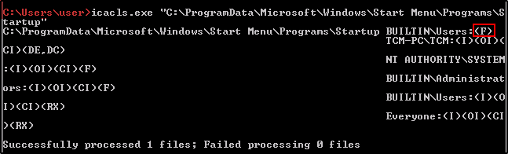

Startup Applications Overview
https://docs.microsoft.com/en-us/windows-server/administration/windows-commands/icacls
icacls
let us know what kind kind of permission we have in the ACLs
We need to know if our group has write access to it.
the
BUILTIN\Users
has
F (Full Access)
to the Startup program!

A list of permission can be found on the link above: